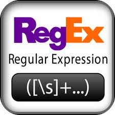

Рассмотрим достаточно серьёзную и важную практически задачу разбора и трансляции регулярных выражений. Регулярные выражения представляют собой компактную форму описания регулярных грамматик, применительно к обработке текстовой информации. По-существу, это метаязык, подобный создаваемому нами языку описания трансляторов. Он очень широко используется в системном администрировании, в веб-программировании, в задачах обработки текстов. Регулярные выражения используются набором утилит, поставляемых в дистрибутивах UNIX (grep, awk, sed и т.д.), многими текстовыми редакторами. Большинство современных языков программирования имеют встроенную или библиотечную поддержку регулярных выражений. Есть она и в языке Haskell, но мы построим собственный транслятор.
Транслятор регулярных выражений должен превращать строку в транслятор, соответствующий регулярному выражению. Например, строку "a.b+" он должен интерпретировать как выражение:
only (term 'a') <> only next <> msome (term 'b')
Таким образом, перед нами стоит задача трансляции строк в трансляторы. Такой процесс называется суперкомпилированием.
Мы не будем здесь реализовывать полный набор функций, реализованных в стандартах POSIX или Perl, остановимся на основных элементах и их комбинаторах:
Регулярное выражение может быть:
. (точка), представляющим любой символ;
символьным классом — набором символов в квадратных скобках [ ], представляющим множество возможных символов ([cat] означает c или a или t); если требуется указать символы, которые не входят в указанный набор, то используют символ ^ внутри квадратных скобок ([^cat] — любой символ, кроме c, a или t); возможно указание диапазонов символов с помощью тире, например [0-9] — означает любой цифровой символ;
группой — регулярным выражением, окружённым круглыми скобками;
последовательностью регулярных выражений;
объединением (перечислением) регулярных выражений;
регулярным выражением с модификаторами повторения.
Приведём формальное описание грамматики регулярных выражений, трансляцию которых мы реализуем:
R = aсимвол-литерал .любой символ [C ]символьный класс (R )группа R |R объединение R R конкатенация (последовательность) R M модификация символьный классС = aсимвол-литерал a-bдиапазон символов ^C отрицание класса модификаторы повторенияM = *повторение элемента ноль или много раз +повторение элемента один или много раз ?повторение элемента ноль или один раз
Регулярные выражения "собираются" с помощью трёх операций — объединения, конкатенации и модификации, причём приоритет объединения ниже чем у конкатенации, а у конкатенации — ниже чем у модификаторов. Объединение можно определить функциональной свёрткой chainr, а конкатенацию осуществить в виде монадической суммы msome:
regexp_ = msome element `chainr` alt where alt = (<|>) <$ term '|' element = (group <|> (only <$> symbol)) <**> modifier group = regexp_ `between` "()" symbol = anychar <|> charClass <|> literal
Теперь определим элементы их интерпретацию. (Сейчас будет немного сюрреализма, но смысл в этом всё же есть.) Все элементы после распознавания транслируются в трансляторы, которые, в свою очередь свои результаты комбинируют в строку.
Символ-литерал интерпретируется, как транслятор term.
literal = term <$> term `except` "?+*()[]|."
Метасимвол . (точка) переводится в транслятор next
anychar = next <$ term '.'
Определение для символьных классов выглядит более сложным, но устроено достаточно прямолинейно:
charClass = c `between` "[]" where c = except term <$> (term '^' *> chars) <|> oneof term <$> chars chars = msome (range <|> only char) char = term `except` "]" range = enumFromTo <$> char <*> (term '-' *> char)
Модификаторы сделаем функциями, как и разделитель <|>:
modifier = option <|> repeat0 <|> repeat1 <|> pure id where option = mopt <$ term '?' repeat1 = msome <$ term '+' repeat0 = mmany <$ term '*'
Наконец, сам транслятор регулярных выражений превратим в полноценный транслятор:
regexp s = case run regexp_ s of Ok "" p -> p _ -> empty
Вот как можно им пользоваться:
run (search (regexp "c.(t|p)")) "the cat has a cup" Ok ["cat","cup"] ""
Вот более полезный пример. Пусть нам нужно из извлечь параметры из URL:
www.site.org?day=7&name=adam&fruit=appleМы можем сделать это с помощью регулярного выражения так:
params = search (regexp "[a-z]+=[^&]+")
А так — транслировать в словарь:run params "www.site.org?day=7&name=adam&fruit=apple" Ok ["day=7","name=adam","fruit=apple"] ""
params = search ((,) <$> key <*> (term '=' *> value)) where key = regexp "[a-z]+" value = regexp "[^&]+"
run params "www.site.org?day=7&name=adam&fruit=apple" Ok [("day","7"),("name","adam"),("fruit","apple")] ""
Пора написать классический транслятор, который используется, как пробный камень во всех статьях по лексическому анализу и компиляции: транслятор произвольных арифметических выражений с учётом приоритетов, ассоциативности и скобок.
Грамматика арифметических выражений с левоассоциативными операциями такова:
Можно честно перевести её к виду, исключающему левую рекурсию, но мы воспользуемся надёжным инструментом: вычислением цепочек chainl. Наделим термы '+', '-' и т.д. функциональными свойствами:
add = (+) <$ term '+' sub = (-) <$ term '-' mul = (*) <$ term '*' frac = div <$ term '/'
Имея такую свёртку, легко напишем транслятор арифметических выражений, производящий вычисления в ходе трансляции:
Проверяем:expr = _E where _E = _T `chainl` (add <|> sub) _T = _P `chainl` (mul <|> frac) _P = _E `between` "()" <|> integer add = (+) <$ term '+' sub = (-) <$ term '-' mul = (*) <$ term '*' frac = div <$ term '/'
Замечательно!testExpr = runTestsFor expr [ ("23", Ok "" 23) , ("23+5", Ok "" 28) , ("23+5-13", Ok "" 15) , ("23-5-13", Ok "" 5) , ("23-(5-13)", Ok "" 31) , ("2*3+4*5", Ok "" 26) , ("2*(3+4)*5", Ok "" 70) , ("32/2/2/2", Ok "" 4) , ("32/(2/(2/2))", Ok "" 16) , ("((((5))))", Ok "" 5) , ("(2*(8-7/2)+5*8)/(2+3)", Ok "" 10)]
add, sub, mul, frac так, чтобы транслятор expr переводил арифметические выражения в постфиксную форму, как в языках Fort или PostScript:
"23" ==> "23"
"23+5" ==> "23 5 +"
"23+5-13" ==> "23 5 + 13 -"
"23-5-13" ==> "23 5 - 13 -"
"23-(5-13)" ==> "23 5 13 - -"
"2*3+4*5" ==> "2 3 * 4 5 * +"
"2*(3+4)*5" ==> "2 3 4 + * 5 *"
"((((5))))" ==> "5"
"(2*(8-7/2)+5*8)/(2+3)" ==>
"2 8 7 2 / - * 5 8 * + 2 3 + /""23" ==> "23"
"23+5" ==> "(+ 23 5)"
"23+5-13" ==> "(- (+ 23 5) 13)"
"23-5-13" ==> "(- (- 23 5) 13)"
"23-(5-13)" ==> "(- 23 (- 5 13))"
"2*3+4*5" ==> "(+ (* 2 3) (* 4 5))"
"2*(3+4)*5" ==> "(* (* 2 (+ 3 4)) 5)"
"(2*(8-7/2)+5*8)/(2+3)" ==>
"(/ (+ (* 2 (- 8 (/ 7 2))) (* 5 8)) (+ 2 3))"-5
-(-5)
-3*3
3*(-3)
2+(-3)
2-(-3)